Srinidhi Bhat / The stories behind the screens
Every interface
has a turning point.
The projects I have designed, the choices I made, and what I would improve next. Each story includes original work and the limits of what I have tested.
A few good places to begin
Six stories. Different kinds of thinking.
Research, systems, creative tools, and the decisions that connect them.
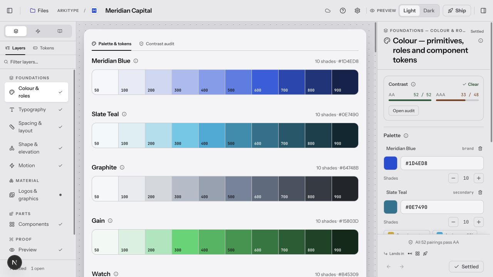
ArkitypeChange a token. See what it changes.
A working design-system studio that links foundations, component behaviour, previews, and exports through one model.
Follow the story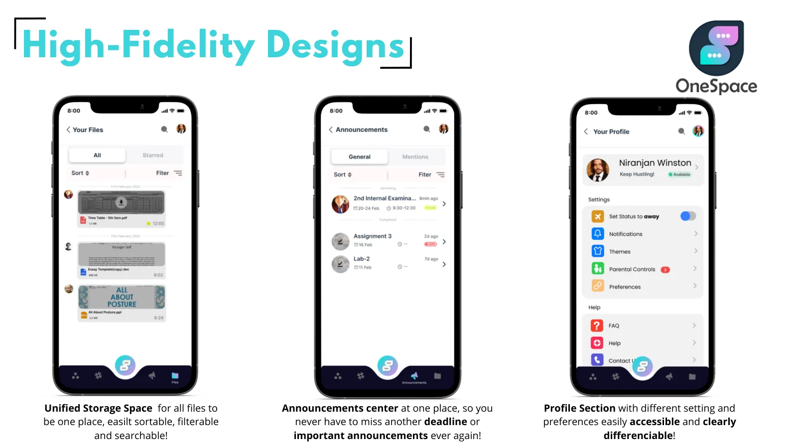
OneSpaceFinding a class file should be straightforward.
A research-led communication concept for students and teachers navigating classes, files, and announcements across disconnected apps.
Follow the story AppleCider
AppleCiderRoom to sketch before committing to a design.
A sketch-like wireframing workspace that carries rough screens into clickable prototypes and editable handoff artifacts.
Follow the story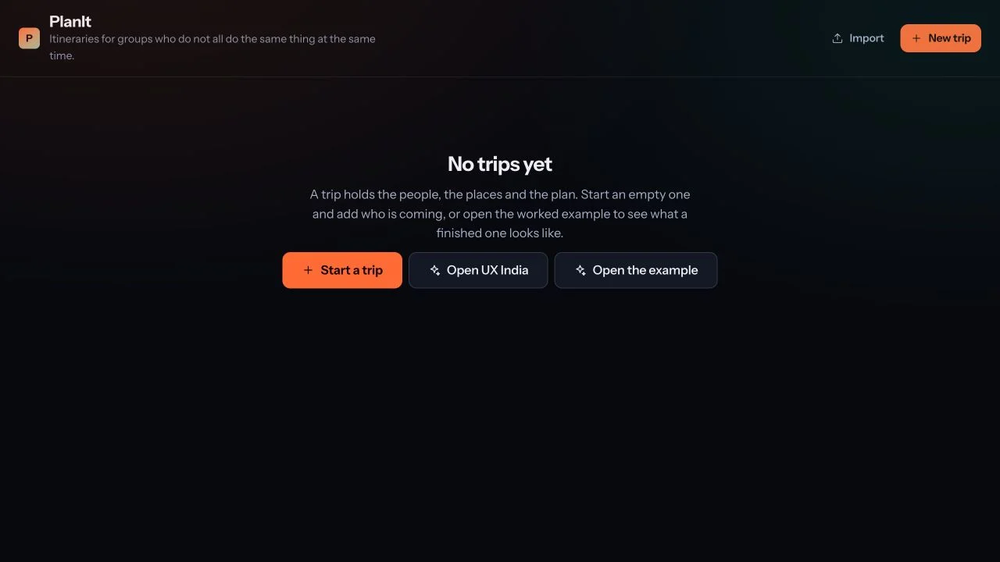
PlanItA trip plan that leaves room for people.
A browser-based itinerary workspace for overlapping plans, different travellers, and different time zones.
Follow the story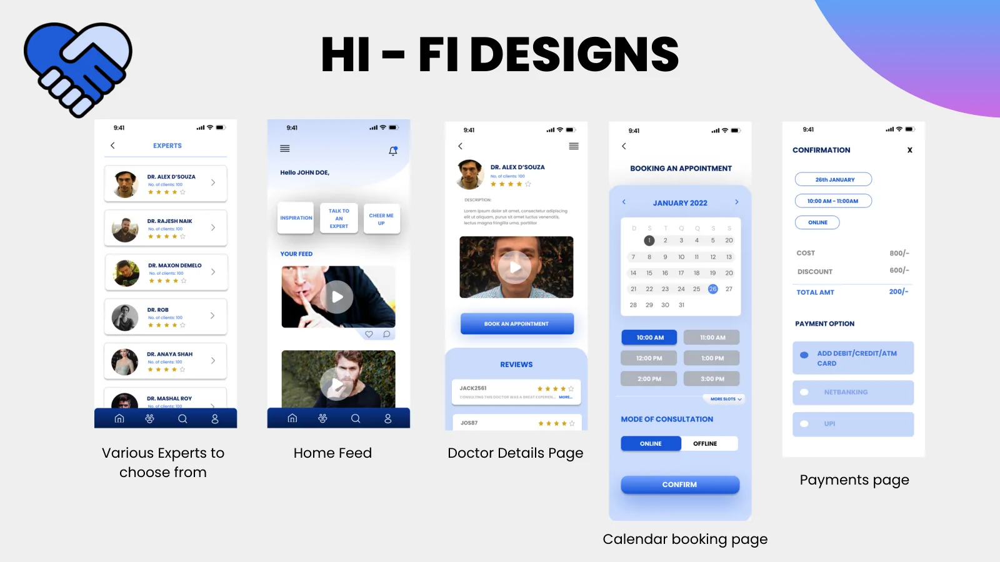
uMatterA clearer first step towards professional support.
A 14-hour team challenge exploring a more approachable route from mental-health awareness to finding and booking professional support.
Follow the story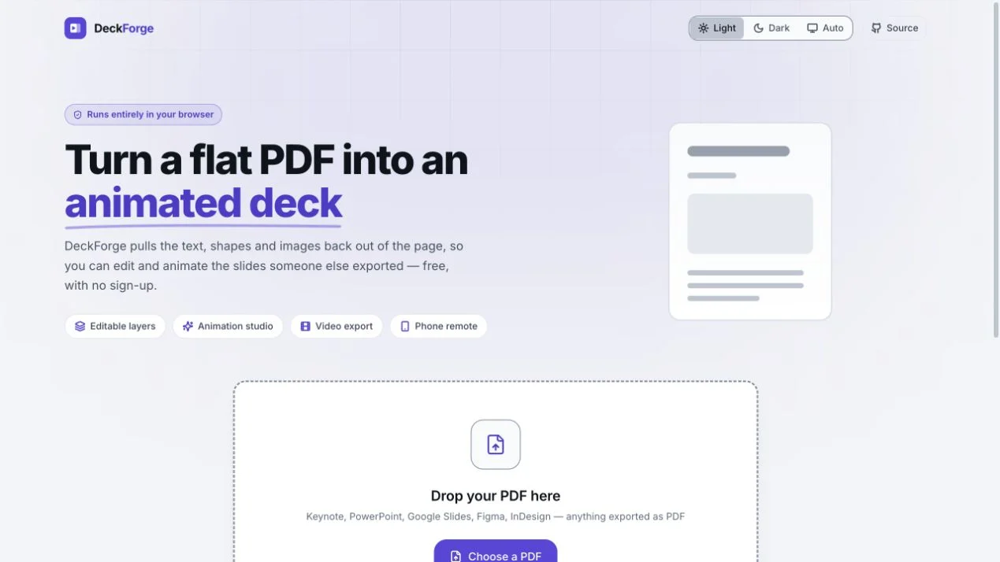
DeckForgeA PDF deck you can work with again.
A browser presentation tool that turns PDF drawing instructions into editable objects, animation, and presenting workflows.
Follow the storyResearch & exploration
Design stories
Research, prototypes and interface concepts from the original projects.
Finding a class file should be straightforward.
A research-led communication concept for students and teachers navigating classes, files, and announcements across disconnected apps.
Follow the storyA clearer first step towards professional support.
A 14-hour team challenge exploring a more approachable route from mental-health awareness to finding and booking professional support.
Follow the story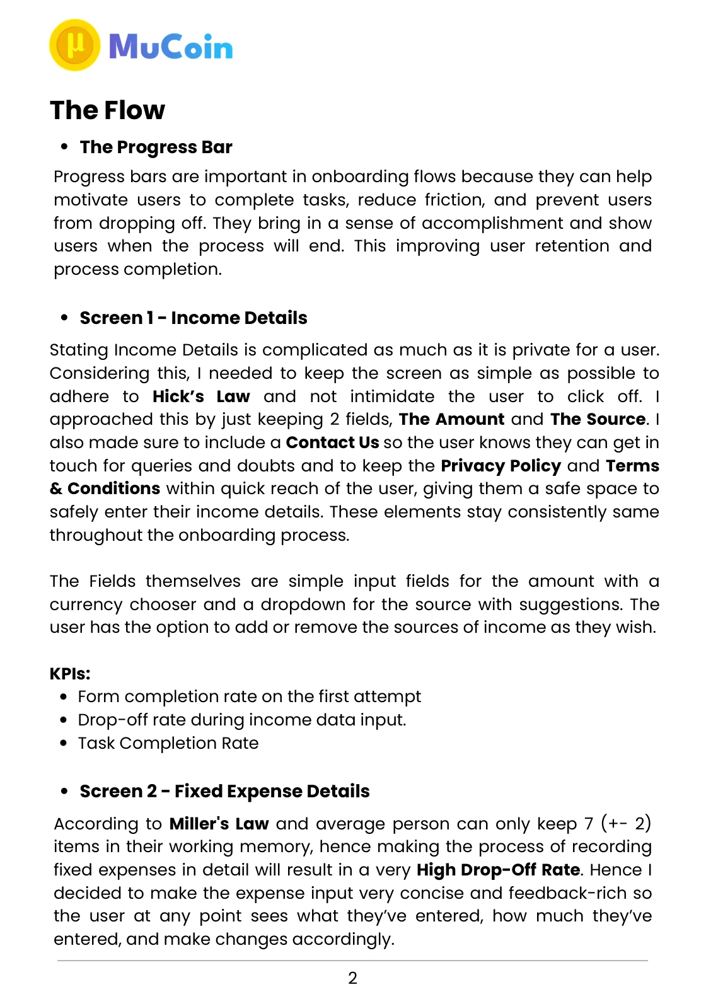
MuCoinMaking the first budget less of a form.
A personal-finance onboarding concept that turns income, expenses, and savings goals into a reviewable starting picture.
Follow the story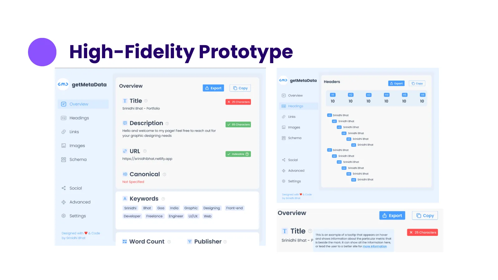
GetMetaDataAn SEO panel you can actually scan.
A browser-extension redesign exploring information hierarchy for people with different levels of SEO experience.
Follow the story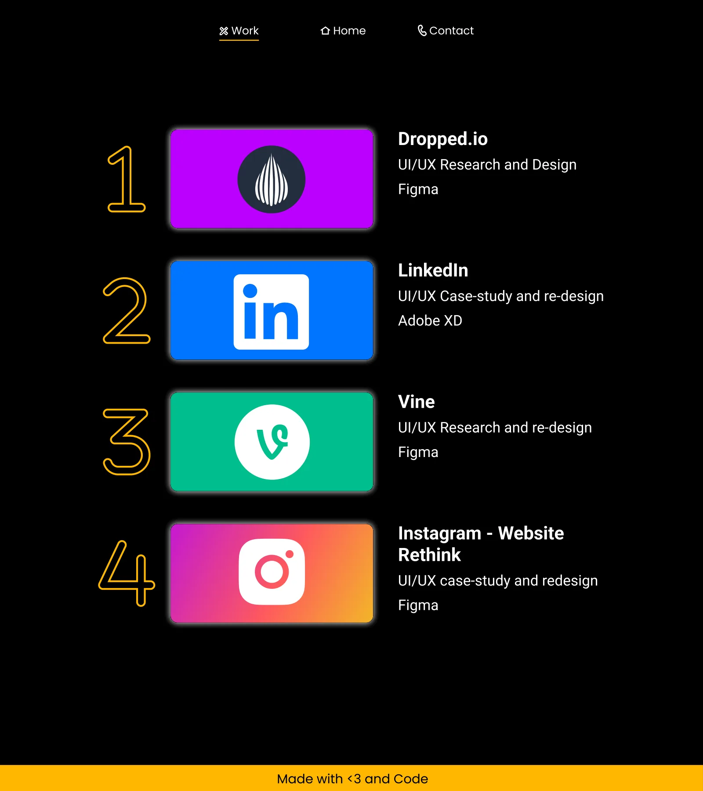
Steve WilsonLet the work lead the portfolio.
An early portfolio concept exploring typography, project browsing, and a repeatable case-study template.
Follow the story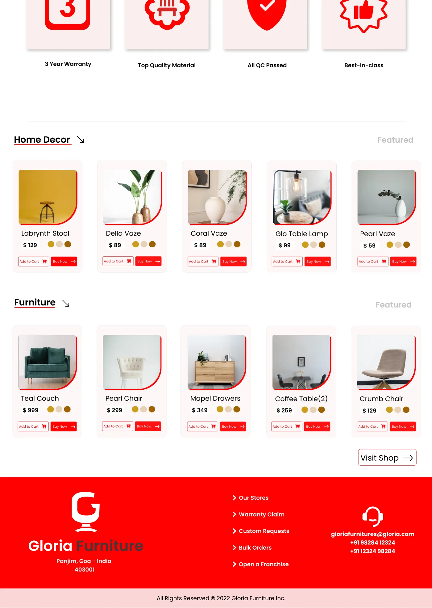
Gloria FurnitureA furniture shop organised around the room.
A furniture storefront concept connecting room-led browsing, product comparison, and purchase actions.
Follow the story Fun Cruises Goa
Fun Cruises GoaChoosing a boat before making an enquiry.
A yacht-rental landing-page concept organised around capacity, price, and the next enquiry.
Follow the story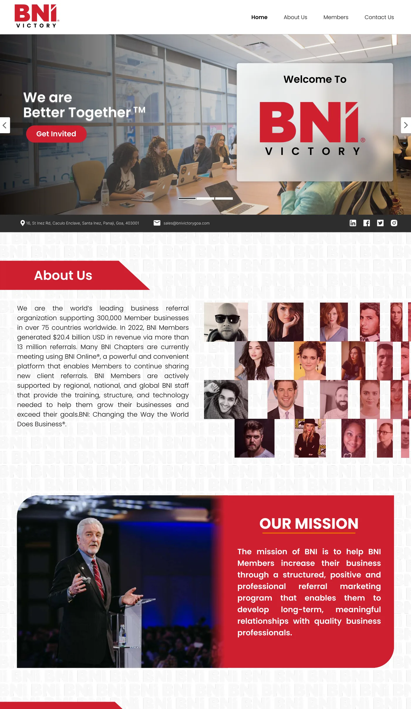
BNI GoaMeet the chapter. Know how to take part.
A chapter-website concept that connects the organisation’s purpose, the people behind it, and a first visit.
Follow the story IRCTC
IRCTCThe train search comes first.
An independent homepage concept exploring the hierarchy between a primary booking task and a large set of secondary services.
Follow the story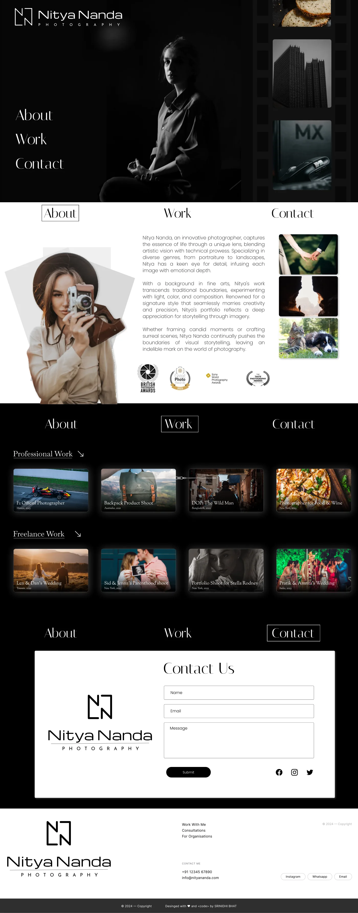
Nitya NandaA photography site that leaves room for the photographs.
A photography portfolio concept with a deliberately restrained interface and two clear ways into the work.
Follow the storyIdeas made tangible
Product stories
Independent tools and games, with the design choices behind them.
Change a token. See what it changes.
A working design-system studio that links foundations, component behaviour, previews, and exports through one model.
Follow the storyAppleCiderRoom to sketch before committing to a design.
A sketch-like wireframing workspace that carries rough screens into clickable prototypes and editable handoff artifacts.
Follow the storyA trip plan that leaves room for people.
A browser-based itinerary workspace for overlapping plans, different travellers, and different time zones.
Follow the story Earthlog
EarthlogWhat is happening around this place?
Explore earthquakes, weather, and the night sky from one place on a globe.
Follow the story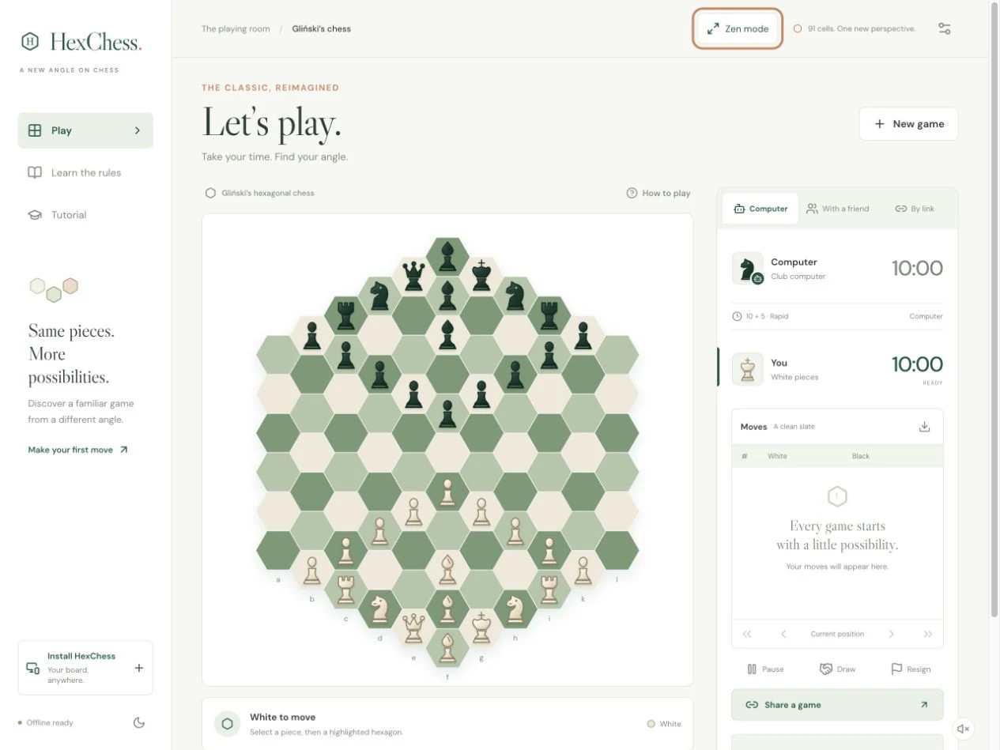
HexChessLearning chess on a different board.
A 91-cell chess variant designed around guided learning, readable interaction, and games that survive interruptions.
Follow the story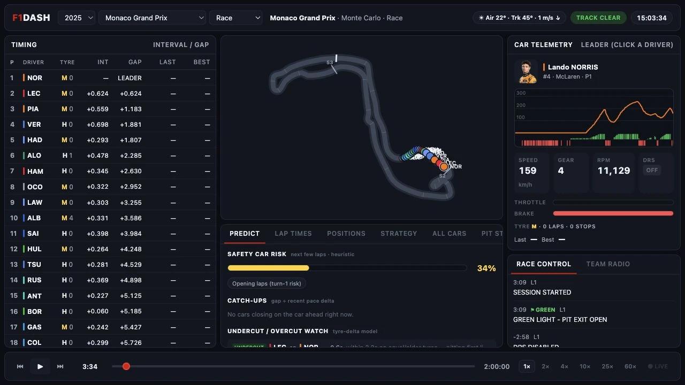
DashF1Follow the driver. Keep the race in view.
A race dashboard connecting timing, track context, and replay while distinguishing measured data from estimated positions.
Follow the story Hued
HuedOne colour. A reason to look closer.
A daily photography prompt with a shared constraint, on-device scoring, and a warm visual language.
Follow the story Yuva Panaji
Yuva PanajiAn event page is only the beginning.
A community website and operations portal linking event discovery with registration and committee workflows.
Follow the storyA PDF deck you can work with again.
A browser presentation tool that turns PDF drawing instructions into editable objects, animation, and presenting workflows.
Follow the story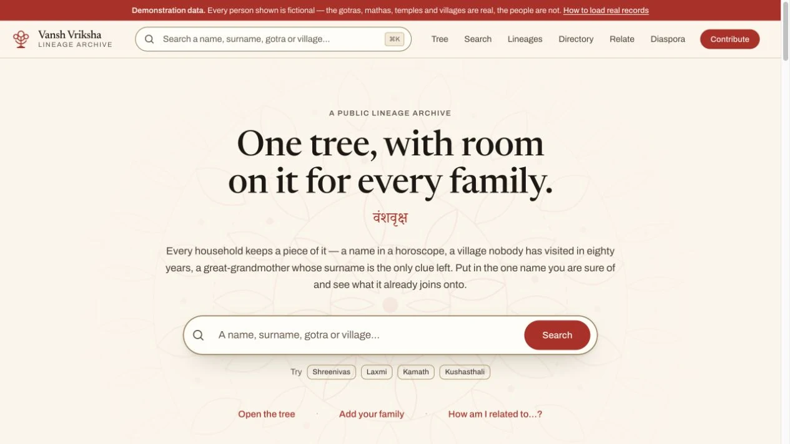
Vansh VrikshaFamily connections with a source to follow.
A community genealogy archive that treats relationships, provenance, and contribution review as parts of the same experience.
Follow the story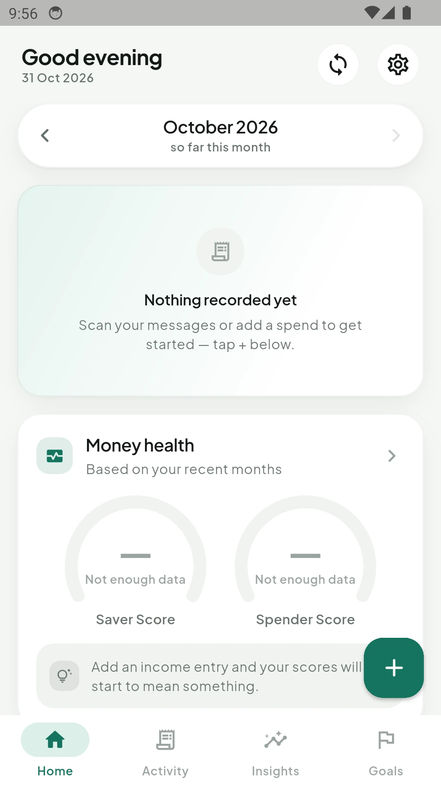
PreMoneyA bank message is not always a clean transaction.
A personal-finance app that converts bank and UPI messages into reviewable transactions, categories, and summaries.
Follow the story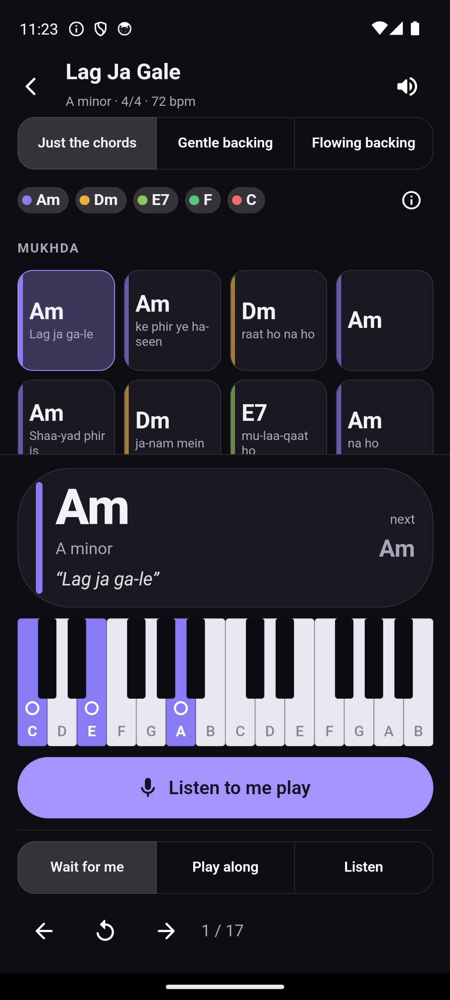
SoundBoxThe song waits until you are ready.
A piano-learning app that connects familiar songs, visible keys, and listening-based progression at the player’s pace.
Follow the story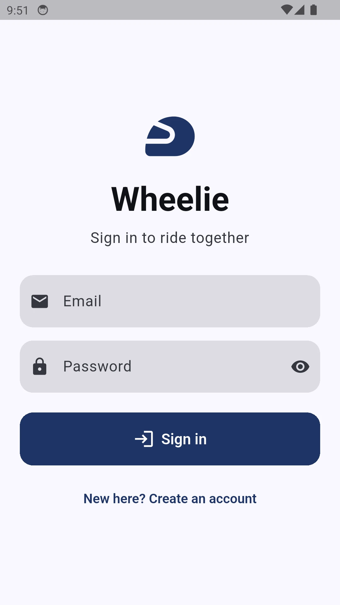
WheelieDifferent starting points. One place to meet.
A group-riding beta that connects rendezvous planning, rider location, helmet voice, and ride summaries.
Follow the story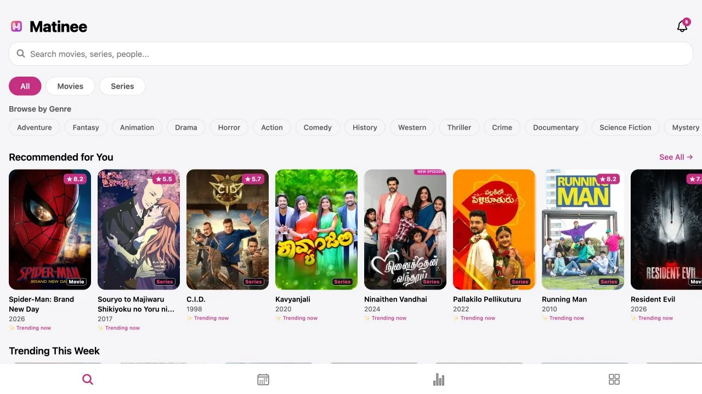
MatineeLess scrolling. A film worth saving.
A cinema-tracking product connecting discovery, a personal watchlist, ratings, and locally generated recommendations.
Follow the story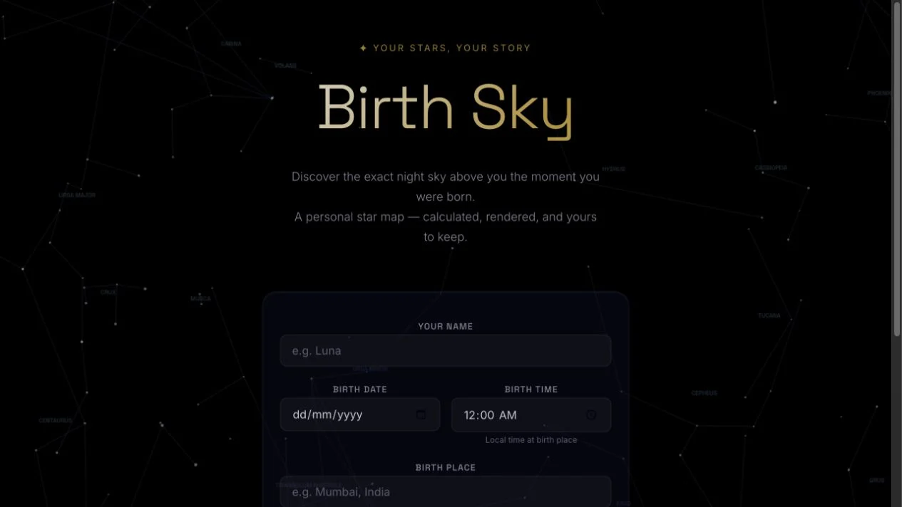
BirthSkyTurn a time and place into a sky to keep.
An astronomy-inspired experience that turns a time and place into a customisable star-map wallpaper.
Follow the story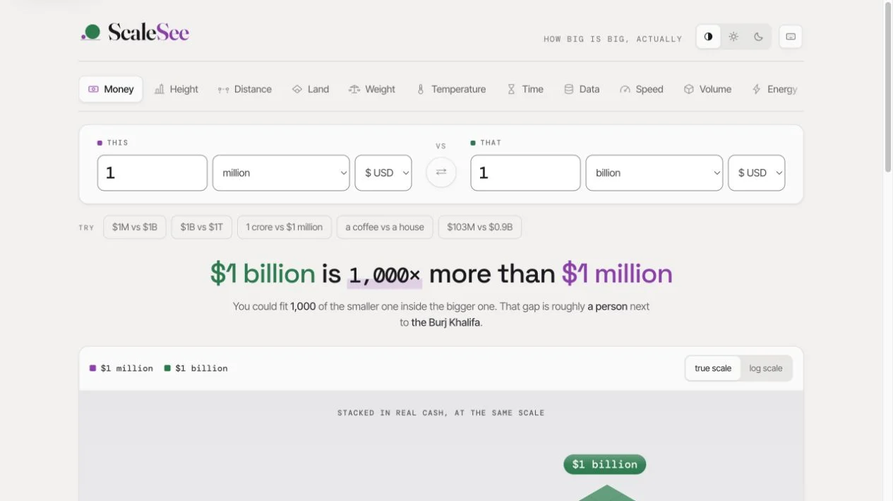
ScaleSeeHow much bigger? Show the difference.
A visual comparison tool that turns quantities into scenes while keeping the meaning of scale explicit.
Follow the story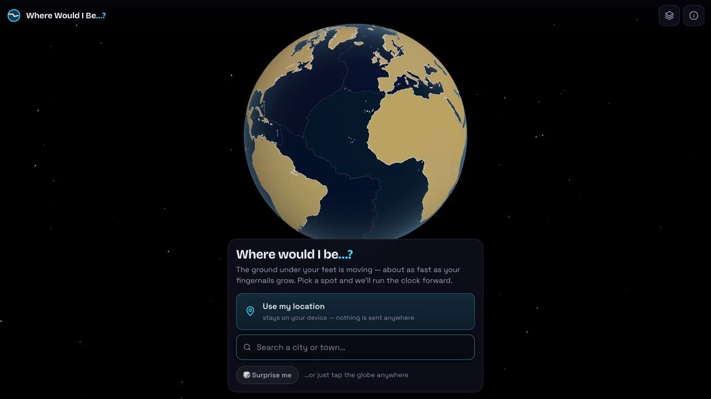
Where Would I Be…?Where would this place be as the plates move?
An interactive globe that lets a chosen place move with a plate-motion model and makes the model’s limits part of the story.
Follow the story The Blog
The BlogA home for my writing, in the form it needs.
An editorial site with a browser-based publishing workflow for poems, essays, fiction, and serial writing.
Follow the story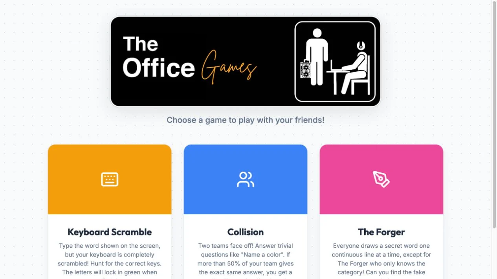
The Office GamesGet everyone in. Keep the round moving.
A team-trivia experience exploring quick room entry, visible roles, and shared game state for a short social break.
Follow the story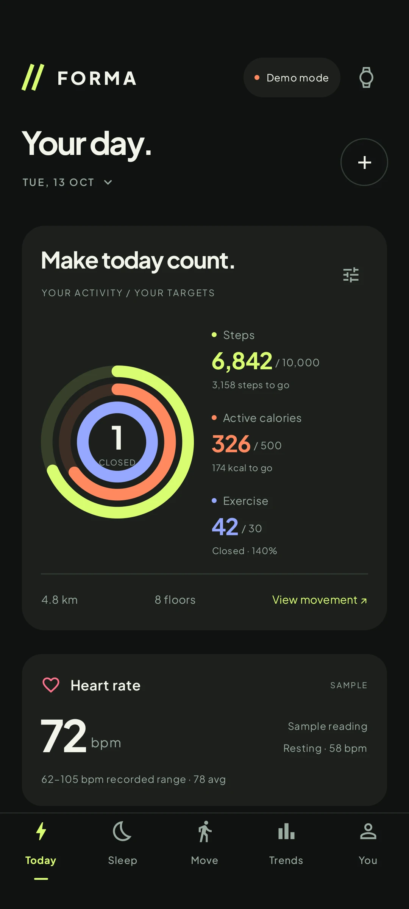
FormaHealth readings with the context attached.
A native Android health app that brings activity, sleep and personal trends together while making sources, missing data and experimental estimates visible.
Follow the story OhCaptain
OhCaptainSail your ship. Coordinate the fleet.
A 3-v-3 naval game exploring shared command, role-specific decisions and a combat interface that keeps the sea in view.
Follow the story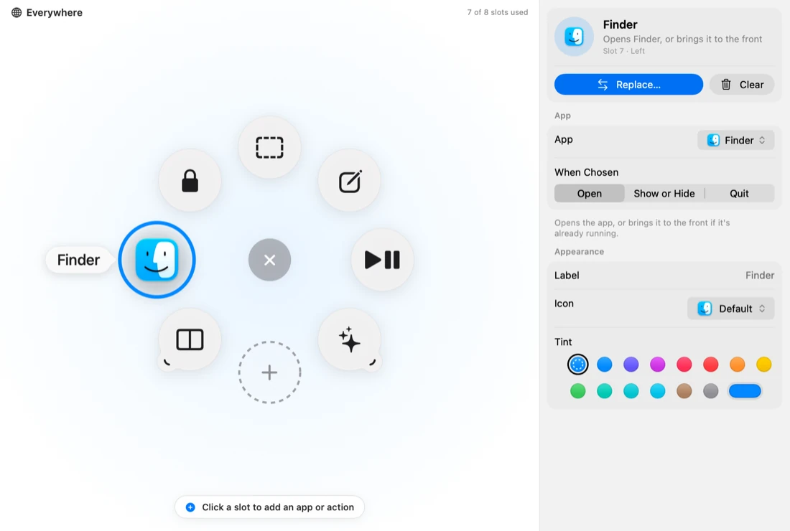
HaloKeep the action close to the pointer.
A desktop action ring for frequently used shortcuts, with app-specific layouts and a visual editor.
Follow the story Binnder
BinnderReview the file. Keep a way back.
A native Android file-review app that combines large previews with explicit keep, bin and permanent-delete actions.
Follow the story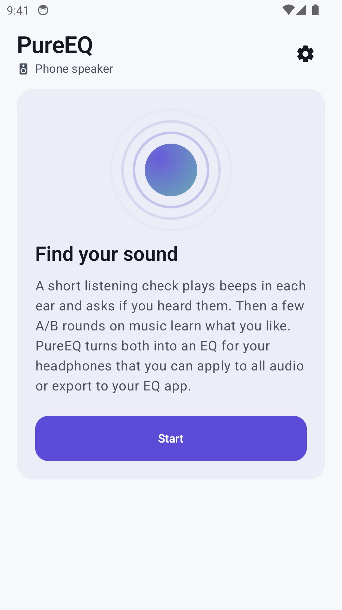
PureEQFind a sound you can adjust and keep.
An Android sound-tuning app that combines a per-ear listening check, music preferences and editable EQ profiles.
Follow the story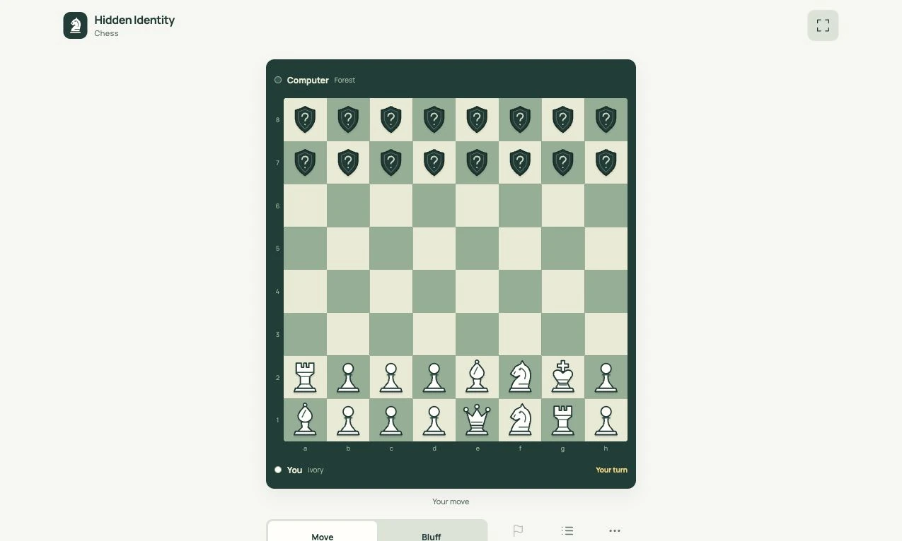
Hidden Identity ChessFamiliar chess. Very different information.
A digital adaptation of Hidden Identity Chess, with private setup, bluffing, challenges and a focused play surface.
Follow the story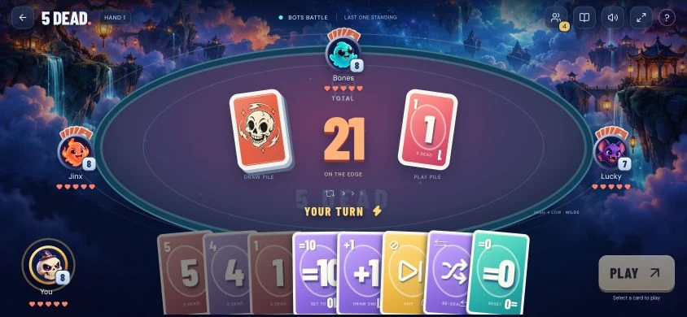
5 DeadKeep the table moving. Keep the turn clear.
An independent digital card game with bot play, shared-device turns and online rooms, built around a visible running total and card actions.
Follow the story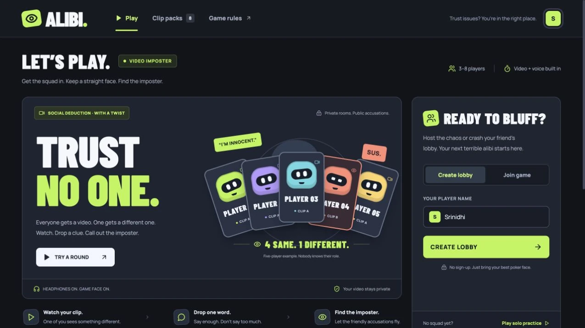
AlibiWatch privately. Give just enough away.
A social video-imposter game that takes a group through private clips, one-word clues, discussion, voting and a reveal.
Follow the story